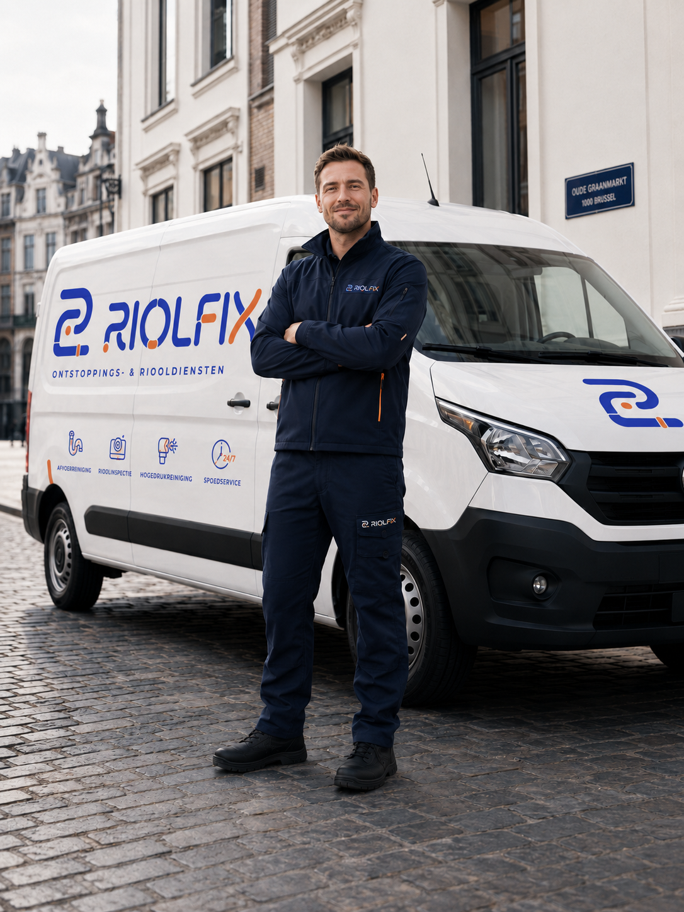
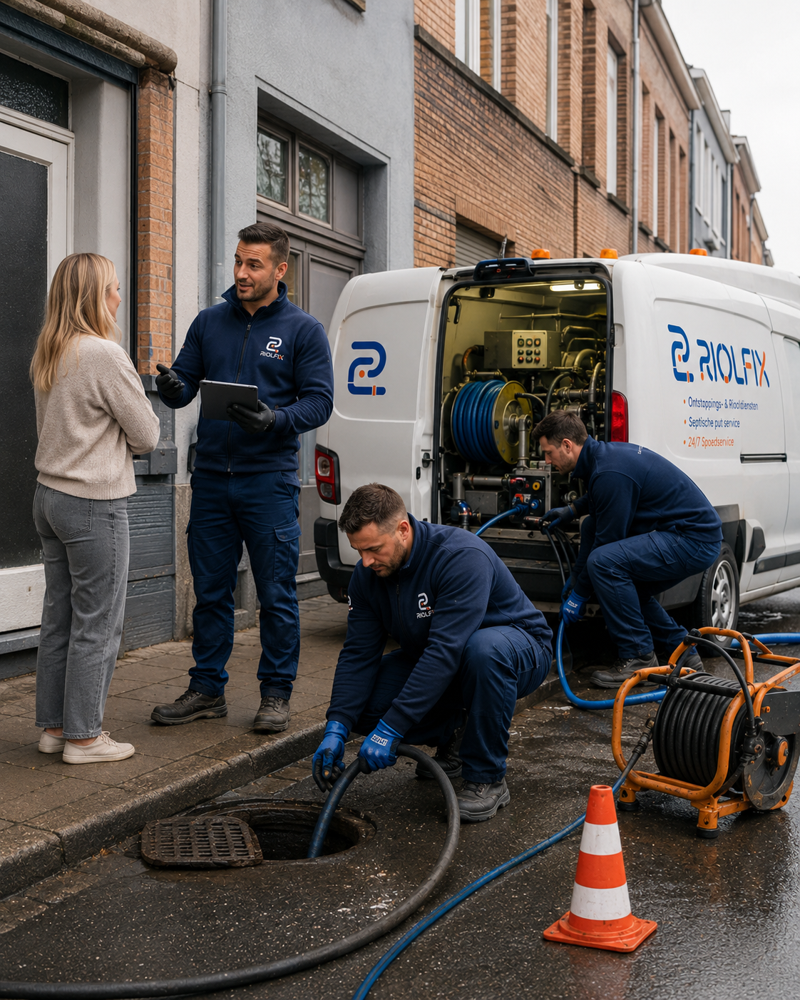
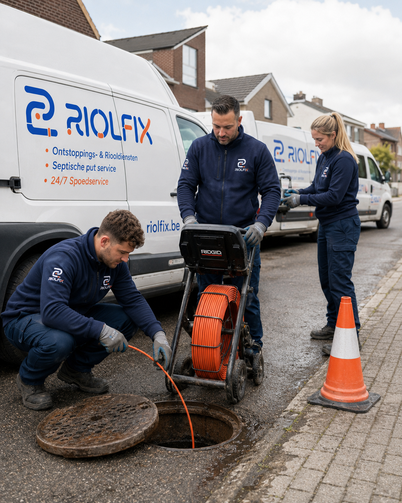
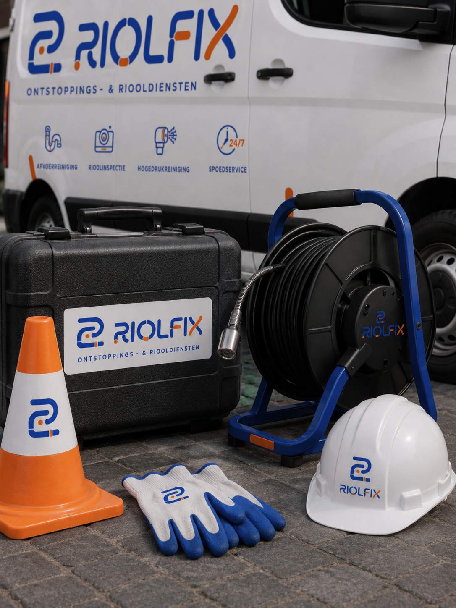
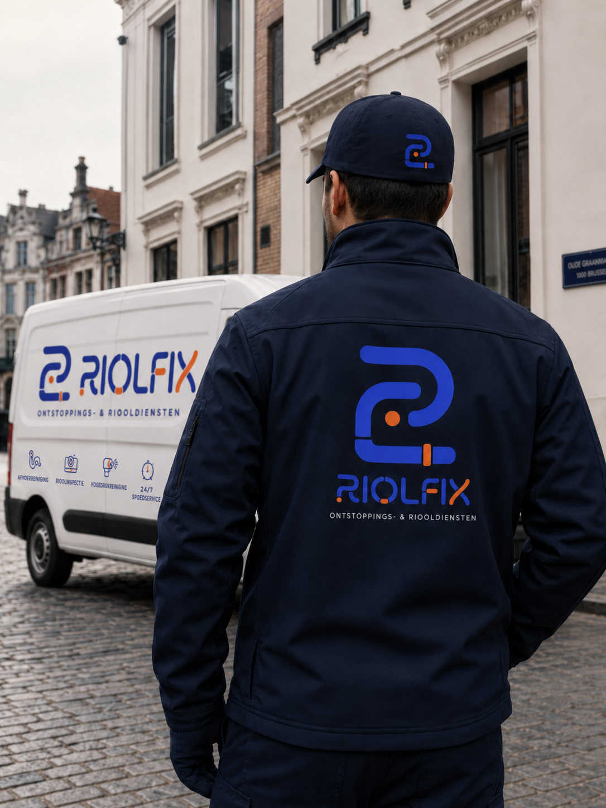
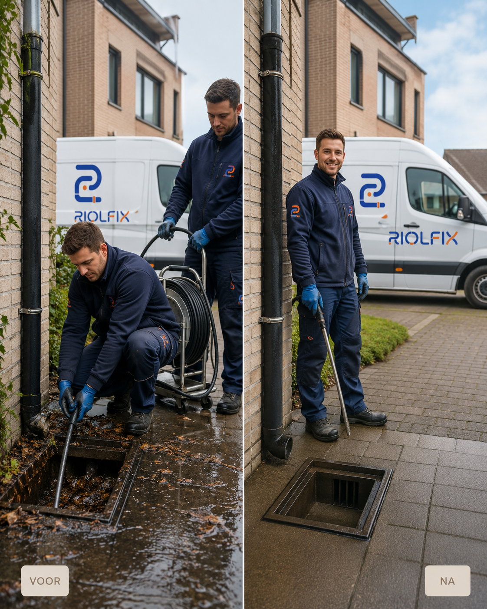
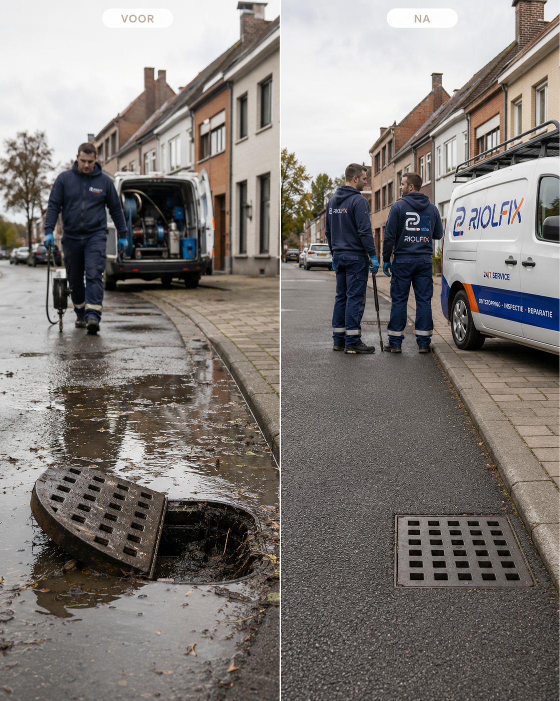

Afvoerreiniging
Keuken, badkamer, toilet, regenput of gemeenschappelijke afvoer. We verwijderen vet, kalk, zeepresten en vuilophoping.

Provincie Antwerpen · 24/7 bereikbaar
Ontstoppings- en riooldiensten voor woningen, appartementen, horeca en bedrijven. Lokale vakmannen, camera-inspectie en hogedrukreiniging zonder nodeloos breekwerk.
RIOLFIX ontzorgt
Een verstopte afvoer komt altijd ongelegen. Daarom werken we met korte lijnen: u belt, wij stellen de juiste vragen, komen met het gepaste materiaal en leggen uit wat er aan de hand is voor we beginnen. Geen show, gewoon degelijk werk.
Diensten
Keuken, badkamer, toilet, regenput of gemeenschappelijke afvoer. We verwijderen vet, kalk, zeepresten en vuilophoping.
Camera-inspectie met duidelijke uitleg, ideaal bij terugkerende verstoppingen, geurhinder of aankoop van een pand.
Krachtige reiniging voor riolen, standleidingen, septische aansluitingen en bedrijfsleidingen met hardnekkige aanslag.
Water dat terugkomt, toilet dat overloopt of hinder in uw zaak? We sturen zo snel mogelijk een technieker uit.



Werkwijze
We vragen waar de hinder zit, hoe dringend het is en of er terugkerende klachten zijn.
De technieker controleert de leiding, kiest het juiste materiaal en bevestigt de aanpak.
We werken proper, beschermen vloeren waar nodig en testen de doorstroming na afloop.
Bij structurele problemen krijgt u foto’s, uitleg en een voorstel voor duurzame opvolging.
Voor thuis en bedrijf
Van een appartement in Berchem tot een restaurant in Mechelen of een magazijn in de Kempen: RIOLFIX combineert lokale beschikbaarheid met professioneel materiaal.

Indicatieve prijzen
Elke situatie is anders, maar u krijgt altijd een duidelijke raming. Spoed, avond- of weekendwerk wordt vooraf vermeld.
vanaf €145
Voor lavabo, douche, keukenafvoer of toilet.vanaf €180
Met duidelijke diagnose en advies op maat.vanaf €220
Voor hoofdriolering, vetophoping en zware aanslag.Prijzen zijn indicatief en exclusief eventuele extra materialen, parkeer- of interventiekosten.
Regio
We rijden dagelijks in Antwerpen stad, Deurne, Berchem, Wilrijk, Mortsel, Brasschaat, Schoten, Mechelen, Lier, Herentals, Turnhout, Geel, Mol en omliggende gemeenten.
RIOLFIX in beeld




Contact
Voor spoed belt u best meteen. Voor onderhoud, inspectie of een offerte kunt u het formulier invullen.